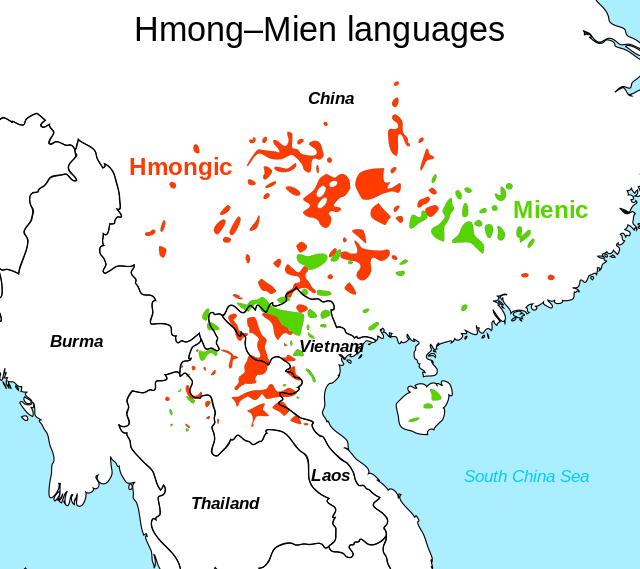
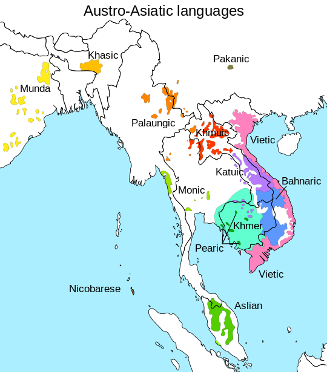

Z-Hot feat Zero - From the deepest corner
Will’s out of town next week!
Skype office hours Thursday are cancelled.
Will will be slower to respond to emails
Niloo will talk Austronesian Monday
Nick Williams will talk Indonesian languages Wednesday
I’ll bring you back some awesome acoustics!
Exams will be handed back Friday in lab
HW4 and HW5 are posted. Enjoy!

Hmong Mien
Tai-Kadai
Austroasiatic
Complexity in Language
Put differently…
Level Tone
Vowel Nasality
Vowel Length
Retroflex Consonants
Contour Tone
Level Tone
Vowel Nasality
Vowel Length
Let’s check out the families first!

The “H” is a lie. Pronounced “Mong”
Originally called a part of Sino-Tibetan
Around 8 million speakers across Southeast Asia
Denver and Boulder have a sizable Hmong-speaking population
Isolating Morphology
Serial Verb Constructions
Numerical Classifiers
Tonality
Voiceless nasals!
Suprasegmental-heavy
Been there, done that…

|
|
|
|
|---|
Been there, done that, no T-Shirt visual pun

Producing vowels with nasal airflow

Mandarin has 5 tones
Hmong has 7 (8 in some dialects)
Hmong also has breathiness and creak


Around 100 million speakers, across 95 languages
Most commonly spoken languages are Thai and Lao
Thai has around 60 million speakers
Lao has around 3 million speakers
Isolating Morphology
Serial Verb Constructions
Numerical Classifiers
Tonality
(Seeing a pattern?)

| ### Austroasiatic Languages |
| * Some people call these “Mon Khmer” |
| * … but that’s not fair to the Munda sub-branch |
| * Vietnamese is the most widely spoken (66 million speakers) |
| * Khmer (16 million), Santali (7 million) and Mundari (1.5 million) are the next most common |
| * The Munda branch is very different due to language contact. |
| * Pereltsvaig handles this well :) |
Isolating Morphology
Serial Verb Constructions
Numerical Classifiers
Tonality
“Wow, there’s something to this”Language area” thing!“
| tôi muốn đi về nấu nướng cho vợ tôi |
| * I want go return cook roast give wife me |
| * I want to go home to cook for my wife. |
Sino-Tibetan, Austroasiatic, Hmong-Mien, and Tai-Kadai
Tonality, Isolating, Numerical Classifiers, Serial Verb Constructions
Lots of awesome suprasegmentals
Now, let’s zoom back out.
dan
|
dad
|
dag
|
da
|
|---|

(Languages get rid of final consonants all the time, actually, and nasals are very commonly removed.)
dã
|
dad
|
dag
|
da
|
|---|
dã
|
da
|
da
|
da
|
|---|
(There are tiny little aerodynamic properties of consonants that nudge languages towards particular tones.)
dã
|
dá
|
dà
|
dâ
|
|---|
This reveals a fundamental truth of Language
We want our language to be…
Consonant Inventory: /b/
Vowel Inventory: /a/
Strict CV syllables
ba
|
baba
|
bababa
|
babababa
|
|---|
The average English speaker knows around 30,000 words

Consonant Inventory: /b, d/
Vowel Inventory: /a, i/
Strict CV syllables
Four possible syllables (ba, bi, da, di)
To get 30,000 words, the longest would be 8 syllables
Consonant Inventory: /b, d, g/
Vowel Inventory: /a, i, u/
Strict CV syllables
Nine possible syllables (ba, bi, bu, da, di, du, ga, gi, gu)
Consonant Inventory: /b, d, g/
Vowel Inventory: /a, i, u/
Strict CV syllables
High, Low, Rising, Falling Tone
36 possible syllables (ba, bi, bu, da, di, du, ga, gi, gu in all four tones)
To get 30,000 words, the longest would be 3 syllables
All 83 consonants on the IPA chart
All 28 vowels on the IPA chart
Strict CV ordering
2324 Unique Syllables
With just two syllables, we get 5.4 million words
Some combinations aren’t desirable
Strict CV isn’t that common
Morphemes can help!
Listeners can’t handle 83 consonants and 28 vowels
… and they don’t need to!
But the moral of the story?
You’re trading “complex sounds” for “shorter words”
… and tone helps with this!
| ### All languages can express everything |
| * For a language to be a language, you must be able to express any concept |
| * There’s no such thing as a “simple” language |
| * … but that doesn’t mean it’s easy to express everything |
| * If you remove a method of expressing something, you’ll need to make up for it somehow |
| * You never reduce complexity, just move it around. |
“I walk to class yesterday”
“I walk to class now”
“I walk to class usually”
“I walk to class tomorrow”
No complexity is lost
No simplicity is gained
Case marking
Allative case - Handles “to” (and so on)
This is what Finnish does!
Serial verb constructions
pig bring enter house = “bring the pig inside the house”
This is what Vietnamese does!
Anything else?
Here’s a real-life example!
| “Keep records for every patient, but we won’t pay you to write!” |
 |
| * This forces simplicity and economy |
“If your records are unclear, I’ll sue your pants off!”

The result?
s/p lap appy conv. open, Lungs c/ausc, A&Ox3
“Patient status-post laparoscopic appendectomy converted to open, lungs are clear to auscultation, the patient is alert and oriented x 3”
“The patient has had a laparoscopic appendectomy which, due to a problem, was converted to an open appendectomy. Her lungs weren’t producing any concerning sounds when I listened, and she’s alert and knows who she is, where she is, and what time it is.”
“Resected Invasive Grade 3 Adenocarcinoma (AJCC 7th PT4N1bMX) in tubovillious adenoma.”
“We biopsied the colon, the results were negative”
“Noted postoperative scarring.”
“History of Pneumonia, Asthma, h/x diverticulitis, MS”
Although we want language to be simple, it needs to be clear!
You can have simple sound systems, or short words. Not both.
Removing complexity in one place adds it back in elsewhere!
Doctors do terrible, dirty, and nasty things to language
Language and Language Family Specific Material (like the first part of today)
Material describing how Language works (like the second part of today)